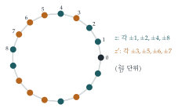

STEP II 1991, 문제 4
계속 읽기 전에 문제를 먼저 읽어 보자. 문제는 STEP Support Programme의 문제 데이터베이스에 있다: step.maths.org/questions/91-s2-q4
도입
1796년 3월 30일, 괴팅겐의 열여덟 살 학생이 평생 쓰게 될 수학 일기의 첫 항목을 적었다. 그는 자와 컴퍼스(ruler and compasses)만으로 정\(17\)각형을 작도하는 방법을 발견한 것이다. 그리스인들은 변이 \(3\)개, \(4\)개, \(5\)개, \(15\)개인 정다각형(regular polygon)과 그 변의 수를 두 배씩 늘린 정다각형을 작도하는 법을 알고 있었지만, 그 뒤 이천 년 동안 아무도 새로운 정다각형을 단 하나도 더하지 못했다. 카를 프리드리히 가우스(Carl Friedrich Gauss)는 훗날 이 발견 덕분에 문헌학자가 아니라 수학자가 되기로 마음먹었다고 말했고, 자신의 묘비에 정\(17\)각형을 새겨 달라고 부탁했다고 전해진다.
이 작도의 핵심은 이 문제의 후반부에 있다. 특정한 네 코사인의 합이 \(\frac{\sqrt{17} - 1}{4}\), 즉 제곱근만 들어 있는 수와 같다는 것이다. 제곱근으로 만들어지는 길이는 자와 컴퍼스로 작도할 수 있으며, 같은 종류의 단계를 세 번 더 거쳐 가우스는 \(\cos\frac{2\pi}{17}\) 자체를 작도할 수 있었다.
시작하기 전에
정\(17\)각형에 관한 문제에 왜 \(\cos\frac{2\pi}{5}\)에 관한 첫 부분이 나오는가?
이것은 같은 아이디어를 더 작은 다각형에 적용해 보는 준비 운동이다. 정오각형의 경우 합 \(\cos\phi + \cos 2\phi\)는 유리수 계수의 이차방정식(quadratic equation)을 만족하므로, 이차방정식을 풀어 구할 수 있다. 정\(17\)각형의 경우에도 네 코사인의 합 \(z\)가 이차방정식을 만족함이 드러날 것이다. 두 경우 모두의 요령은 코사인끼리 곱한 다음 \(\cos A\cos B = \frac12\bigl(\cos(A + B) + \cos(A - B)\bigr)\)를 이용하여 곱을 다시 같은 각들의 코사인의 합으로 바꾸는 것이다.
차근차근 풀기
단계 1 정오각형
\(y^2 = (\cos\phi + \cos 2\phi)^2\)을 전개하고, 각 곱을 합으로 바꾼 뒤, \(5\phi = 2\pi\)를 이용하여 \(3\phi\)나 \(4\phi\) 같은 각을 줄여 보자.
\[y^2 = \cos^2\phi + 2\cos\phi\cos2\phi + \cos^2 2\phi = \tfrac12(1 + \cos 2\phi) + (\cos 3\phi + \cos\phi) + \tfrac12(1 + \cos 4\phi).\] \(5\phi = 2\pi\)이므로 \(\cos 3\phi = \cos(2\pi - 2\phi) = \cos 2\phi\)이고 \(\cos 4\phi = \cos\phi\)이다. 따라서 \[y^2 = 1 + \tfrac12(\cos\phi + \cos2\phi) + (\cos\phi + \cos 2\phi) = 1 + \tfrac32 y,\] 즉 \(2y^2 = 3y + 2\)이다.■ \(2y^2 - 3y - 2 = (2y + 1)(y - 2) = 0\)의 근은 \(y = 2\)와 \(y = -\frac12\)이다. 그런데 \(y = 2\)가 되려면 두 코사인이 모두 \(1\)이어야 하는데 그렇지 않으므로 \(y = -\frac12\)이다.■
단계 2 \(17\)제곱 단위근의 합은 \(0\)이다
\(\sum_{k=0}^{16}\cos k\theta\)는 \(\sum_{k=0}^{16}\omega^k\)의 실수부이다. 여기서 \(\omega = e^{\mathrm{i}\theta}\)는 원시(primitive) \(17\)제곱 단위근(root of unity)이다. 이 등비급수(geometric series)는 \(\frac{\omega^{17} - 1}{\omega - 1} = 0\)이다.■
따라서 \(\sum_{k=1}^{16}\cos k\theta = -1\)이다. \(\cos(17 - k)\theta = \cos k\theta\)이므로 항들이 짝을 이루고, \[\sum_{k=1}^{8}\cos k\theta = -\tfrac12.\]
단계 3 코사인을 두 묶음으로 나누기
\(z = \cos\theta + \cos2\theta + \cos4\theta + \cos8\theta\)라 하고, 나머지 네 코사인의 합 \(\cos3\theta + \cos5\theta + \cos6\theta + \cos7\theta\)를 \(z'\)이라 하자. \(z + z'\)은 얼마인가?
2단계에 의해 \(z + z' = -\frac12\)이다. \(zz'\)도 구할 수 있다면 \(z\)와 \(z'\)은 어떤 이차방정식의 두 근이 된다.
\(zz'\)을 계산하라. 이를 \(16\)개의 곱 \(\cos a\theta\cos b\theta\)로 전개하고, 각각을 두 코사인의 합으로 바꾼 다음, \(\cos\theta, \cos2\theta, \ldots, \cos8\theta\)가 각각 몇 번 나타나는지 세어 보라. (\(\cos k\theta = \cos(17 - k)\theta\)와 \(\cos(-k\theta) = \cos k\theta\)를 이용하여 각을 줄인다.)
각 곱은 \(\cos a\theta\cos b\theta = \frac12\bigl(\cos(a + b)\theta + \cos(a - b)\theta\bigr)\)가 되므로, \(zz'\)은 \(32\)개의 코사인의 합에 \(\frac12\)을 곱한 것이다. \(a \in \{1, 2, 4, 8\}\), \(b \in \{3, 5, 6, 7\}\)인 \(16\)개의 쌍을 차례로 살펴보자. 예를 들어 \(a = 1\), \(b = 3\)이면 \(\cos4\theta\)와 \(\cos2\theta\)가 나오고, \(a = 8\), \(b = 7\)이면 \(\cos15\theta = \cos2\theta\)와 \(\cos\theta\)가 나온다. 열여섯 쌍 모두에 대해 이렇게 계산하면 \(\cos\theta, \ldots, \cos8\theta\)가 각각 정확히 네 번씩 나타난다. 그러므로 \[zz' = \tfrac12 \times 4 \times \sum_{k=1}^{8}\cos k\theta = 2 \times \left(-\tfrac12\right) = -1.\]
단계 4 이차방정식
따라서 \(z\)와 \(z'\)은 \(t^2 + \frac12 t - 1 = 0\), 즉 \(4t^2 + 2t - 4 = 0\)의 두 근이고, 그 근은 \(t = \frac{-1 \pm \sqrt{17}}{4}\)이다. 어느 쪽이 \(z\)인가? 수치로 보면 \(\cos\theta \approx 0.932\), \(\cos2\theta \approx 0.739\), \(\cos4\theta \approx 0.092\), \(\cos8\theta \approx -0.983\)이므로 \(z \approx 0.78 > 0\)이다. 그러므로 \[z = \frac{-1 + \sqrt{17}}{4} = -\frac{1 - \sqrt{17}}{4}. \qed\]
돌아보기
곱을 합으로. 코사인의 곱셈 공식은 \(y^2\)과 \(zz'\)을 같은 코사인들의 합으로 바꾸어 주었고, 그래서 계산이 닫힌 형태로 마무리되었다.
합과 곱이 이차방정식을 준다. \(z + z'\)과 \(zz'\)을 아는 것은 \(z\)와 \(z'\)을 두 근으로 하는 이차방정식을 아는 것과 같다.
올바르게 나누는 것이 중요하다. 여덟 개의 코사인을 \(\{1, 2, 4, 8\}\)과 \(\{3, 5, 6, 7\}\)로 나누었기 때문에 \(zz'\)에서 모든 지표가 똑같은 횟수만큼 나타났다. 아무렇게나 나누면 이렇게 되지 않는다.
숨은 수학
왜 \(\{1, 2, 4, 8\}\)인가? \(17\)을 법으로 할 때, \(3\)의 거듭제곱 \(3^0, 3^1, 3^2, \ldots\)은 \(0\)이 아닌 모든 나머지(residue)를 거친다. \[1, 3, 9, 10, 13, 5, 15, 11, 16, 14, 8, 7, 4, 12, 2, 6.\] 하나 걸러 하나씩, 즉 \(3^0, 3^2, 3^4, \ldots\)을 택하면 \(1\), \(9\), \(13\), \(15\), \(16\), \(8\), \(4\), \(2\)가 나오는데, 이는 \(17\)을 법으로 \(\pm1\), \(\pm2\), \(\pm4\), \(\pm8\)이며, 정확히 \(z\)에 들어 있는 각들이다. 나머지 절반은 \(\pm3, \pm5, \pm6, \pm7\)로, \(z'\)에 들어 있는 각들이다. 가우스는 이러한 묶음에 걸친 \(\omega^k\)의 합을 주기(period)라고 불렀다. \(17 - 1 = 16 = 2^4\)이므로 나머지들을 네 번 반으로 나눌 수 있고, 각 단계에서 주기들은 이전 단계의 주기들이 계수에 들어 있는 이차방정식을 만족한다. 이차방정식 네 개, 즉 제곱근 네 개를 거쳐 유리수에서 \(\cos\frac{2\pi}{17}\)까지 내려갈 수 있다. \[\begin{gathered} \cos\tfrac{2\pi}{17} = \tfrac{1}{16}\Bigl(-1 + \sqrt{17} + \sqrt{34 - 2\sqrt{17}} \\ {} + 2\sqrt{17 + 3\sqrt{17} - \sqrt{34 - 2\sqrt{17}} - 2\sqrt{34 + 2\sqrt{17}}}\Bigr). \end{gathered}\] 모든 단계에 제곱근만 들어 있고, 제곱근은 (닮은 삼각형이나 반원을 이용하여) 자와 컴퍼스로 작도할 수 있으므로, 정\(17\)각형은 작도 가능(constructible)하다.

어떤 다각형을 작도할 수 있는가?
가우스가 주장하고 1837년 피에르 방첼(Pierre Wantzel)이 증명한 바에 따르면, 정\(n\)각형을 자와 컴퍼스로 작도할 수 있는 것은 \(n\)이 \(2\)의 거듭제곱과 서로 다른 페르마 소수(Fermat prime)들의 곱의 곱일 때, 그리고 그때뿐이다. 페르마 소수란 \(2^{2^m} + 1\) 꼴의 소수이다. 알려진 페르마 소수는 \(3\), \(5\), \(17\), \(257\), \(65537\)이며, 이는 1.1 절의 페르마 수이다. (페르마(Fermat)는 이런 수가 모두 소수라고 추측했지만, 오일러(Euler)가 \(2^{32} + 1\)이 \(641\)로 나누어떨어짐을 보였고, 그 뒤로 더 이상의 페르마 소수는 발견되지 않았다.) 따라서 정\(257\)각형과 정\(65537\)각형은 작도 가능하다. 19세기에 Johann Hermes는 약 십 년에 걸쳐 정\(65537\)각형의 작도법을 완성했고, 그의 원고는 괴팅겐에 보관되어 있다. 정\(7\)각형과 정\(11\)각형은 작도할 수 없는데, \(7\)과 \(11\)이 페르마 소수가 아니기 때문이다(\(7 - 1 = 6\)과 \(11 - 1 = 10\)은 \(2\)의 거듭제곱이 아니다). 정\(9\)각형도 작도할 수 없는데, \(9 = 3^2\)에서 페르마 소수 \(3\)이 반복되기 때문이다. 방첼의 증명은 6.3 절에서 다루는 체의 차수(degree of a field extension) 이론을 이용한다.
사고 기술
어떤 양을 구하려면, 그것과 자연스럽게 짝을 이루는 상대를 찾아 둘의 합과 곱을 계산하고, 그로부터 얻은 이차방정식을 풀어라.
요령은 합과 곱을 모두 계산할 수 있도록 짝을 고르는 데 있다. 여기서는 \(17\)을 법으로 한 나머지들의 대칭성에서 짝이 나왔고, 이 아이디어를 네 번 되풀이하여 가우스는 작도법을 얻었다.
더 도전하기
정칠각형. STEP II 1995, 문제 6을 풀어 보라. 단위근을 묶는 가우스의 아이디어를 \(7\)제곱 단위근에 적용하여, 코사인의 합과 사인의 합의 정확한 값을 구하는 문제이다. 사인 합의 부호를 결정하는 것이 미묘한 단계이다.
정오각형. \(\cos\frac{2\pi}{5} = \frac{\sqrt5 - 1}{4}\)임을 보이고, 이를 이용하여 자와 컴퍼스로 정오각형을 작도하는 방법을 설명하라.
다른 주기. \(z' = \cos3\theta + \cos5\theta + \cos6\theta + \cos7\theta = \frac{-1 - \sqrt{17}}{4}\)임을 수치로 확인하라.
생성원. \(17\)을 법으로 할 때 \(3\)의 거듭제곱은 \(0\)이 아닌 모든 나머지를 주지만, \(2\)의 거듭제곱은 그렇지 않음을 보여라. \(2\)의 거듭제곱은 어떤 나머지들을 주는가?
더 읽을거리
Ian Stewart, Galois Theory (CRC Press). 자와 컴퍼스 작도와 정\(17\)각형을 다루는 장이 있다.
Richard Courant & Herbert Robbins, What Is Mathematics? (Oxford University Press). 제3장은 정\(17\)각형을 포함하여 작도를 초등적으로 아름답게 설명한다.
Daniel Kehlmann, Measuring the World (Quercus). 가우스와 알렉산더 폰 훔볼트(Alexander von Humboldt)에 관한 유쾌한 소설로, 머리를 식히기에 좋다.